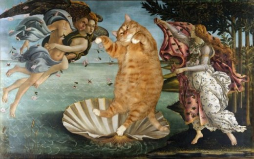

Cats
Felis Catus

Botticelli’s “Birth of Meh Felinus”
Here is a bit of history on cats:
- Cats have associated with humans for up to 10,000 years.
- The oldest known burial of a domesticated cat comes from Cyprus, where a human and a cat were buried together 9,500 years ago.
- Felines display object permanence, which is the ability to realize that something still exists when it's out of sight.
- Unlike dogs, which are pack animals, cats evolved from a solitary wild lifestyle.
- Cats have excellent vision, their eyes are loaded with sensing cells called cones, which provide acuity in bright light.
- Cats aren't particularly strong smellers, but their sense of hearing is very sensitive.